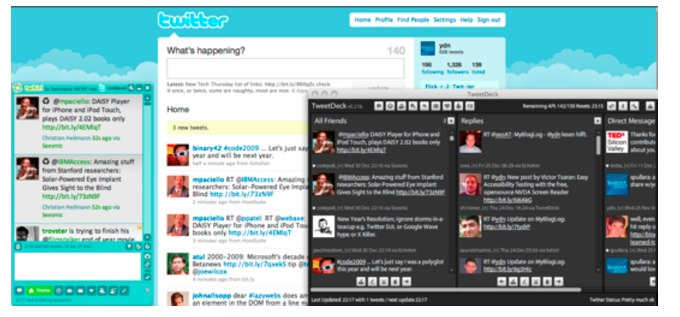
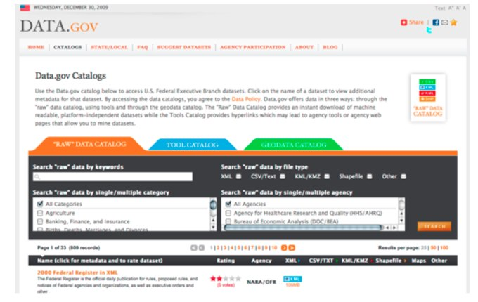

This is a demo chapter about a book covering YQL which was planned to be released with Yahoo Press this year. I had written this chapter over Christmas last year as a pitch and it then got lost in paperwork. As I am leaving Yahoo I took this with me and now you can enjoy it here for free.
A changing web
Web development in the last few years has changed drastically. When you see how people use the web these days we are not talking about surfing any longer. We don't go to one web site and spend some hours there browsing and looking for content before going to the next.
Instead we communicate with other people on the web, get recommendations, find information by following experts and learn from our friends and contacts what the new cool thing of the moment is. Products like Facebook, Twitter, Upcoming, Last.fm, MySpace, Flickr and LinkedIn are the starting points these days and if what you built gets recommended there you are part of the "cool stuff" that happens on the web. The impact of the social web goes so far that search engines that traditionally were the "yellow pages" of the web start mixing their indexes with "real time web" updates from Twitter and Facebook. Content that has been verified by people you trust and know shows up higher than content a machine considered worthwhile.
The web is now much more social and human and this is what the whole "Web 2.0" hype is all about. If you want to be a success in this new world of loosely connected information with human review and promotion your product and information needs to be available in the most easy fashion imaginable.
We spend millions of dollars on advertising and search engine optimization to leave our footprint on the web and get people to visit what we have. This is really not that necessary. If you embrace the web as a construct of linked data with human curators advertising your services and reaching high quality end users becomes much easier.
In the past we tried to do everything on our own servers building software that only we used and with data that only we had access to. This is changing as more and more companies start to use third party systems and share their own information with APIs.
APIs, or Application Programming Interfaces are ways for developers to reach the information they need by sending request parameters. So instead of doing a search on the web for "Puppies" and getting the latest results ranked by whatever dark magic the search engine applies a search API would allow you to define "puppies" as the search term, filter the results by language, date range, or give you 20 results starting with the 503rd result and other ways to customize the data returned to you. Instead of just getting an HTML document that is the search result you will get the data back as XML and you can also only request the links and the titles - none of the other information like description, amount of links pointing to this site and other things the search result page displays.
For example you can go to Microsoft Bing and search for puppies and get the result in a browser:
Figure 1: A search result page
By using the Bing API you can get the same information as XML:
Figure 2: Using the API you can get the same data as XML
When you start using APIs in earnest, you realize that what we considered the web up to now - the web sites - are just one view of the information contained in the web. By digging deeper we can create a much more flexible and better performing web.
Offering data with APIs
Offering an API means that you allow developers programmatic access to your information. So instead of publishing your data as a web site and hoping people will come to it you allow people to tap into your data and show your information in their sites. You also allow them to build applications driven by your data on other platforms like Facebook, Mobile Phones, game consoles and TV sets or wherever they please.
By separating your data from your web product and offering an API you reap several rewards:
You can monitor web and API use separately and see where the strengths of your product lie.
You double your audience already by offering two different ways to access the same data.
You have a new source of income as people may pay for usage of your data.
You reach lots more end users as people will build applications with your data and embed the data in relevant products. That way you can piggyback on the success of other products, frameworks and platforms.
Your data being displayed somewhere else and attributed back to you is a link back to your site much like a banner ad would be.
By offering your data out there you outsource innovation - a lot of creative uses of your data and especially mixing them with other APIs will show you just how much can be done with what you have. A lot of times we are far too close to the product to realize its potential.
A lot of companies have already understood that concept and offer APIs. If you look at http://programmableweb.com - a kind of "yellow pages" for APIs - you can see just how many APIs are out there:
Figure 3: At the time of me writing this, Programmable Web lists 1573 APIs to play with.
Probably the biggest success story of offering an API is Twitter. Twitter was not a success out-of-the-box because of its amazing web interface - on the contrary - the interface kept changing constantly catering to the wishes and needs of a changing community (another clever move on the part of Twitter).
The main success factor of Twitter was that from the start they allowed people to update Twitter through several channels - text message, emails, using the web site or using the API. The real breakthrough came when developers integrated Twitter in systems people already used and created much handier applications to read updates and write about what you are doing right now:

Figure 4: Twitter and different Twitter clients.
Funnily enough even governments and not-for-profit organizations start seeing the web the same way. The US government offers their data at http://data.gov, so does the Australian government at http://data.australia.gov.au/ and the UK at http://data.gov.uk. A clever move as the market has much more specialized, keen and able developers when it comes to building human interfaces than government departments who are very much hindered by red tape and hierarchies.

Figure 5: It is all about the data - the US government has its own API offerings - democracy in action.
This is the case for API use for data publishers, but what if all you want is to offer a web site? How do APIs work for you?
Consuming the web of data
The web is full of specialized services with social elements. These are a great opportunity for you as a web developer. Instead of trying to do everything yourself, you can use expert systems built to fulfil a certain task.
Say for example you have photos to display on your web site, and you don't want to convert them into web formats yourself. What you can do is using Flickr (http://flickr.com):
You upload your photos in bulk either on the site itself or with the uploading tool.
Flickr converts your photos into several handy sizes automatically and allows you to add headings, descriptions and tags.
If you allow the world to add to that you even get keywords (in the form of tags) that you haven't thought about.
People will see your photos, comment on them and tell their friends on Flickr and on other social systems about them. That way your main product gets on the radar of people without you having to spend money on advertising.
You can then use the Flickr API to get the photos back into your web site, already tagged and described for you.
The alternative would be to write an own image uploading and conversion tool, create a tagging and describing interface and deal with the user management to boot.
On Flickr you can even limit the access to the photos to a certain group or invite people to see them on a Guest Pass.
Figure 6: Flickr is a full content management system for images and has an API to get the data back in handy formats to re-use.
You can do the same with other kinds of data:
YouTube allows for hosting of videos and converts them into web friendly formats. You can tag the videos, get comments and even annotate and caption them - something that is very much necessary for accessible video and quite tough to do yourself.
Google Maps has a wonderful interface to allow people to find the way to your office. Instead of painting cryptic - albeit pretty - maps yourself and trying to guess where people might be coming from simply add a full address and use the Google Maps API to embed a dynamic map next to it.
LinkedIn is a great way for people to keep their personal CV, professional connections and progress up-to-date. Instead of creating an "about us" page that is outdated by the time it goes live simply pull the data of your employees from the LinkedIn database. If the company name doesn't match yours any longer, remove the entry from the "about us" – it is as easy as that.
Using APIs, web services and hosting services for specialized data means a few things for you:
You spread your information around the web and give it to people right where they expect to find it. For example code on GitHub (http://github.com) is much easier to maintain and a lot of developers hang out there. A zipped up version of your code on your own server means you need to version it yourself and people will have to find your site first.
You use systems that have been fine-tuned to deliver and convert exactly this kind of data and you don't have to worry for example about the art of image or video conversion.
You allow people to tag, comment on and bookmark your data - and tell their friends about it (as all of these services have community elements).
You don't have to pay for all the hosting and data transfer - especially with video this can be quite a bundle.
You can move your server easily - you can even be offline for a while - your data will still be available and still be used by people out there.
You already become a data provider as all of these hosted services have APIs for you - and others - to use. In the simplest case, this could be an RSS feed.
So, hosting and spreading your data means that you already take part in the web of data - but the really cool thing is mixing it up.
Mixing and matching to create something new
Mashups or "mixing several data sources to create something new" have been quite a buzz for the last few years in the web development market. A lot of people celebrate this way of thinking and developing as the most innovative thing that happened to software development in the last 20 years.
Probably the first mashup in the web world was taking photos and placing them on a map to give them more context and make them easier to take in. Flickr now even has an interface for that:
Figure 7: Placing photos on a map in Flickr.
The interesting thing about this is that years and years before the first computer the same trick of putting information on a map was used to solve a medical puzzle. John Snow was a surgeon in London and he was as confused as the next medical person what the reason for the outbreak of Cholera in London in 1854 was. He solved the puzzle by noting down the location and number of deaths on a map of London (all details are available on Wikipedia: http://en.wikipedia.org/wiki/1854_Broad_Street_cholera_outbreak):
Figure 8: John Snow's Cholera Map. By placing the deaths of Cholera victims on a map John Snow proved that the water supply was the main reason. So to say the first mashup ever.
Whilst you will probably not solve the great mysteries of life with a web mash-up it is still a very interesting way to make information more understandable and show the relationships between different sets of data. For example you could take the latest articles of the New York Times, analyze their content, extract keywords and then show relevant photos next to them. For all of this you have APIs and putting them together is fun. However, there is a nagging issue.
Where it all becomes tricky
It is not all fun and games though. The biggest issue with mashups is that there is no standard for API development and every API developer team made assumptions and had ideas what the best way of building one is. Take this and the great developer tradition of either not documenting at all or documenting for those who are already experts in a certain system and you have quite a job cut out for you. Right now we spend most of our time of building mashups with reading up on documentation or trying to get the different APIs to work first on their own and then with another. Each API works in different, and sometimes mysterious, ways:
You need to authenticate somehow with the API. This could be a developer key, oAuth authentication, browser based authentication, session keys and secrets, SOAP and many other ways the API architects considered most useful. Authentication is needed to monitor your access and shut you out should you try to spam or overload the system. In most API cases these days this is automated, but there are APIs that send out API keys by hand and after human review which means that you might have to wait for a bit to get to the data.
Each API expects the incoming parameters in a different format. Some want a SOAP XML request, others have creative ways of naming parameters and yet others expect all of the request data in the HTTP header and none on the URL itself.
Each API has different request throttling methods. Some go by IP and allow a certain amount of request per hour and another per day. Others do the same for the developer key and independent of IP and yet others need a time-based key for each request.
Each API has different output formats. Especially with XML structures and the wonders of namespacing you will find a lot of data hard to plough through.
A lot of APIs work on the assumption that you want all the data and have no way of filtering down the information to what you really need in the initial request. It is up to you to load it all and filter it on your end. This means a lot of unnecessary traffic and work for you to find what you need.
So all in all the problems of using APIs are - as always - a lack of standardization and predictability. You have to be an expert in a system before you can use it although the system was actually intended to allow for easy access to information.
Now scale this up to industrial and enterprise size
Now imagine yourself being a company like Yahoo. Everything inside Yahoo works with APIs. This is simply a necessity, as things need to scale to an amazing amount of requests and traffic.
If a web site is hammered as hard as the Yahoo home page or search result page or stores as much information as Flickr with dozens of images being uploaded every second you cannot make the front-end talk directly to the databases or do heavy calculations and conversions. All of this is abstracted into APIs and cached and packed and whatever else we can come up with to make the end-user experience as swift as possible without killing the servers.
The problems with APIs, however, are the same. In a company the size and age of Yahoo APIs have been built by departments completely independent of the other parts of the company and some of them have been built years ago with techniques which are now woefully outdated. Some smaller APIs delivered amazing data but were not hosted on infrastructure that could take a massive amount of traffic and many other issues.
Using several APIs for a new product was much less of a technical exercise but an exercise in communication, trying to find the right people to talk to and documentation that is not completely outdated or written for people who enjoy reading regular expressions as a pastime.
This is why we needed a simpler way to use and mix old and release new APIs.
Looking back at what we've done before: Yahoo Pipes
Actually for end users Yahoo already had a system that makes it dead easy to take data of the web, mix it and get it back in a format that is easy to use: Yahoo Pipes:
Figure 9: Yahoo Pipes is a visual interface to remix the web of data.
Yahoo Pipes is a graphical interface for mixing and filtering web data. It looks and feels like a database schema tool or Visio and thus was a big success with the visual community and people who do not like to program but feel much more comfortable using a mouse to put pieces of information together.
The usability of Pipes is pretty amazing, when you add a new data source and you try to connect it with filter methods or mix it with other sources all you need to do is to drag a handle and you see a line that can be connected to the places where it makes sense. Possible targets are highlighted so there is no way for you to make mistakes.
The visual nature of Pipes is also its problem. First of all the interface is not accessible at all. Users who have no ability to use a mouse or cannot see have no chance to use Pipes.
Furthermore, building systems that use very complex filtering and collating can slow down your browser and become hard to maintain. Maintenance was another issue - there is no versioning of Pipes so any change you do means you lose what you had done before - unless you save the pipe under a different name.
So Pipes had the right idea, but it didn't scale to what Yahoo needed. This is why they took the concept of Pipes and put it back into code - YQL was born.
YQL - select * from Internet as the solution
YQL or Yahoo Query Language is a language that describes what you want to get from the Internet and how it should be returned to you. It is very much related to SQL - the standard way of accessing databases for decades.
Instead of making YQL an interface like Pipes Yahoo decided to make it a web service. That way it can be used by anyone, regardless of ability or technical environment and it scales to levels of complexity no interface could ever scale to.
We will go into details about YQL in the following chapters, but as an example let's try what we talked about earlier: take the latest articles on the term "carbon" of the New York Times, analyze their content and extract keywords and then get relevant photos.
Authenticate with the NYT API and get the right content
Take the results, filter them down to the bare necessity and for each result call the Yahoo Term Extractor API
For each of the resulting keywords, go to Flickr and get photos relating to that term.
All in all this is a lot of authentication and requesting - say for 10 articles you find 5 keywords each. This means you need to call the term extractor 10 times and the Flickr API 50 times. Depending on the API this could mean quickly that you are over the allowed requests per hour.
In YQL, this becomes as easy as this:
select * from flickr.photos.search where text in(
select content from search.termextract where context in(
select body from nyt.article.search where query="carbon"
)
)
Your code does one single request - all the rest happens on the YQL server farm for you. All you have to do is call the YQL web service (without any authentication unless you want to) and you get the data. You can even limit the amount of information you want and sort the results.
Benefits of using YQL
Using YQL allows Yahoo to work much more efficiently:
Instead of having to maintain server farms for all the different APIs they can beef up one of them and give it the main job to deliver all the APIs with the YQL interface.
Instead of discussing with different departments what the different APIs need they simply call them with the SQL-style interface and create backend code that converts this to the right API calls under the hood.
If they need to switch APIs around they don't need to tell anyone, they simply point the YQL endpoint to the new API and won't break any implementations.
Instead of having to write lots of documentation about authentication and rate limiting they use YQL and can concentrate on documenting the data properly.
By making it easier for Yahoo we also have a very easy and elegant way to use the web of data without being an API expert - neither on the publishing nor on the consuming side.
YQL Benefits for data consumers
As a data consumer or mashup creator YQL makes things a lot easier for you:
You don't need to worry about different authentication methods, input parameters or output formats. You learn what YQL needs you to do and start pulling data off the web.
Instead of learning how to filter data returned from web services and APIs with XML, DOM or regular expressions all you need to learn is a simple SQL-style language.
You don't need to pull a lot of information and then sift through the data. By filtering before you request the information you get the least amount of data necessary to do what you want to achieve. This means less traffic and faster applications.
Instead of making requests from your own server to all the different API servers you use you make one single request to the YQL server farm. This not only speeds up your application but it also works around some rate limits.
The YQL server farm is most likely better connected to the web than your server and thus can pull information from other servers much faster, or - as the YQL team keeps putting it - "our pipe is fatter than yours".
By using JSON-P as the output format of YQL you can turn any resource on the web into something that you can use in JavaScript. This is immensely useful for example when you build widgets.
By using some of the more advanced features of YQL you can even convert data on the YQL server into any format you need using server-side JavaScript. This allows you to re-use existing conversion scripts without the browser dependency, performance and security issues pure JavaScript solutions come with.
Using even more advanced features also allow you to store data on the YQL server farm – which is something less to worry about on your own server.
Quite a bundle of arguments, isn't it? But what if you want to publish data on the web?
YQL Benefits for data providers
If you are a data provider, either already with an API or thinking about offering one YQL has a lot of benefits for you, too:
All you have to do is provide Yahoo with an XML schema that points to your API endpoint for it to be available in YQL.
You can then piggyback on the infrastructure of YQL to deliver your API to the world. The servers are fine-tuned to deliver data as fast as possible and provide you with caching and rate limiting to prevent your own data endpoint from being overloaded.
Offering your API as a data table in the YQL system makes it dead easy for users to get to your information and mix it up with all the other systems already in there.
Piggybacking on the simple YQL syntax means you don't need to write own documentation.
You reach an already existing community of developers without having to build an own and deal with community moderation and support.
If you need to change your API in the future, you can do that without breaking implementations as people use YQL to access it.
Interested? Walk with me…
This is what YQL is - a way to make the web of data accessible for people who are interested in using the information contained in it without being API experts themselves. For the experts it means that they can concentrate on building great data endpoints and implementations rather than reading and writing documentation for things that should not be hard to do.
In the following chapters you will get to know the YQL endpoints, syntax of the language and the console which makes it dead easy to find data sources and mix them. We will then go into implementations of YQL and show some very hands-on examples of how YQL makes it easy to build mashups.